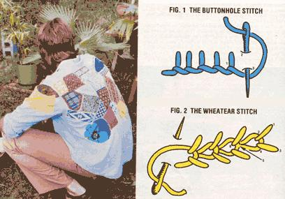

This morning, I rejuvenated a worn-out (but irreplaceable!) shirt, transformed a pair of threadbare jeans into a work of art, and saved some comfortable shorts from the ragbag ... all by patching.
I've been rescuing clothes this way for years (I even ran a garment-patching business in college), and I find it one of the simplest, least expensive, and most gratifying ways to repair, restore, and embellish worn wearables. Besides, I have fun doing it! Many people don't seem to understand when I explain that I view each hole, rip, or frayed area as a new and exciting sewing challenge.
Of course, I could restrict myself to using unadorned and utilitarian-though wellmadesquares and rectangles, but it stimulates my imagination and my needlework skills to use various shapes and embroidery stitches to make my work individual and, I think, beautiful. The techniques that must be learned in order to tackle this type of sewing are relatively simple, too. In fact, most of you who are reading this article probably already know the basics ... and may even have many of the supplies you'll need.
Anyone who sews very likely has an array of good scraps left over from former projects. These, plus old blue jeans and the legs from denims that have been made into cutoffs, will be your main supplies. Furthermore, if you don't have such resources on hand, you'll find that friends and neighbors will often be willing to contribute fabric bits or unwanted garments that can be cut into usable pieces. Flea markets, garage sales, thrift shops, and benefit sales can be of help, too. Also keep an eye on the remnant counter at fabric shops and discount chain stores: You'll frequently come across excellent buys on small amounts of cloth. Whatever the source, though, always try to select material with a high percentage of cotton, as it has little stretch, holds a crease well, and is both durable and easy to work with.
A free-arm sewing machine that can make either straight or zigzag stitches will definitely help simplify your task, but you should be aware that some of the most beautiful patches are made by hand. The choice is up to you. (Special thread is necessary on ly when you're trying to achieve a particular effect.)
Two basic procedures are used in patching: folding and stitching. I generally allow a 1/2" edge turnover on my patches. (To turn the raw edges of a square or rectangle, first fold in the four corners to the wrong side, then turn under 1/2 " along each side.) For the actual sewing, a straight stitch (by machine or by hand) will do ... if you make two rows of stitches 1/4 inch apart (one should be as close as possible to the edge of the patch). I recommend, however, that you use a mechanical zigzag stitch if your machine has one. Or you can buttonhole-stitch by hand, as in Fig. 1. When using either of the latter two suggestions, be sure to position the stitch across the joined edges in order to catch both the garment and the patch.
The type of repair you make will-of coursedepend on the size, shape, and condition of the hole you're mending. And the first consideration will be whether some strands of fabric remain across the tear.
When strands do remain, you need to darn the area before patching. It's tempting to skip this step, but if you do, the fabric will continue to fray and put a strain on the new piece. Any type of thread will do-remember, the darning will be covered by the patch later-and, in fact, this is a good time to use up all those odd bobbin-thread lengths from projects past. Next, measure the area to be covered, and cut a piece of suitable fabric with 1- 1/ 2 " added to both the length and the width (in this way, a 2 " X 4 " hole would require a 3-1/2" X 51/2" pat-h). Then turn under the raw edges to the wrong side and pin it over the newly darned hole. If the material being sewn is very bulky, baste the patch in place before stitching firmly ... either by hand or by machine.
When no threads remain you'll actually be replacing the worn area rather than simply covering it. First, trim the hole's raw edges . . . then turn them under 1/4" to the inside of the garment (you may need to notch or clip corners in order to make a smooth edge), and baste this hem down. Now, cut a patch that's I " larger-in both length and width-than the trimmed hole.
In this case, the patch will be placed on, the inside of the garment ... with its right side facing out through the hole. Before you set it in place, though, you must either bind its edges with small zigzag stitches or turn under 1/2"-toward its right side-and iron, pin, or baste this hem down.
Be sure to center the piece under the hole so that no raw edges show before basting it in place. The best way to sew a patch of this type is to stitch-either zigzag or straightvery close to the edge of the hole ... and then stitch again about 1/2 inch farther out from the hole. If done correctly, the first row of sewing will anchor the edges of the hole and attach the patch. The second row of sewing should then catch the outer edges of the patch ... but you'll want to check as you work to be sure that it actually does!
You may want to go on to embroider either of these two types of patches, using one of the stitches I've shown (in Figs. I and 2), or one of your personal favorites.
Some types of clothes-and certain areas on any garment-are especially prone to wearing out. Blue jeans usually get hard use, and often need patches on the knee, thigh, and seat areas. I like to work with unusual patches made from contrasting fabrics, but I've learned that denim patches seem to work best on denim garments. (They needn't be the same color, however ... and it's also fun to use different shapes-)
On occasion I've had to replace the entire seat of a pair of jeans. I've found that this is much easier to do if I add the new fabric in two or three sections on either side of the center seam: That way, it "gives" better. In such cases I first cut a pattern for one section out of brown paper (an unfolded grocery bag works well).
The shirt pictured here has been' subjected to one patch after another for five years. About two years ago, the back became so thin and threadbare that the fabric tore whenever I pinned or sewed it. For sentimental reasons, however, the shirt just couldn't be thrown away ... so I drew a pattern in the shape of the entire back on brown paper, then cut a whole new back from some cotton chambray (work-shirt material), adding 1/2" all the way around. After folding in the raw edges, I attached this new back to the inside of the shirt along all of the stitching lines (collar, shoulder, armholes, sides, and hem), using a double row of straight stitches. Once this was finished, I added the shirt's accumulation of "trophy" patches . . . which anchored the new back where there were no seams, and preserved the memories that gave the shirt its value.
When I make patches, I especially enjoy using my imagination and creativity to turn a tear into a thing of beauty ... but such innovative repairs are most practical on shirts and other lightweight clothing. One of my favorite tricks is to select a fabric with an unusual design, then cut the patch into the shape of one of the components of that design ... with 1/2" added all around for a hem. The result is a combination of applique and patching which can be very appealing. (Big floral prints and novelty patterns lend themselves quite well to this technique.)
Tight budgets call for thrifty habits, and right now might be an especially good time to establish a part-time patching business. Needless to say, you must have the necessary skills and techniques at your fingertips (so to speak) before you start ... and you'll also need both the equipment (a sewing machine is probably a must for folks who want to turn "pro") and a goodly supply of scrap materials.
The patching business I started in college was quite enjoyable, and was lucrative enough to offset many of my school expenses. Once I had all the necessities on hand, I began by advertising my service and the rates I hoped to charge. I cut small (6" X 8") pieces of denim and embroidered the borders with a lovely wheatear stitch. Then I glued cards printed with pertinent information (including my phone number) to these patches, and posted the little signs on prominent bulletin boards on campus and in nearby stores. In no time I had as much business as I could handle. (Unfortunately, I did have to replace my notices often, because people liked the patches so much they snitched them ... but since virtually all of my customers mentioned the signs when they came in, I felt the extra effort was well worth it.)
When prospective clients contact you, you'll first have to give each one an estimate as to how much his or her job will cost. This is difficult, and becomes easier only as you gain experience and get to know how fast you can work. The best way to estimate, I feel, is to decide beforehand what a simple, averagesized patch will cost, and then base other prices on that figure. (I generally used my own material, allowing each customer to pick his or her favorite ... a few folks did bring their own, though.)
I also made up a sample swatch showing my different embroidery stitches, and offered to embellish the borders at an additional charge. (I found it best to stick to only those stitches I could do quickly and evenly.)
If you do decide to go into this business, be prepared for some unusual requests. A drama student, for example, once asked me to "artistically" patch the seats of three pairs of jeans. When I pointed out that there were no holes to be repaired, he cheerfully countered that he just liked the look of patches.
Another student drew a striking and intricate design that represented his counterculture lifestyle. I first embroidered the unusual pattern on a denim patch, and then used the square to cover a hole in the knee of his jeans. (This was not one of my basic cut-rate jobs.) This same student, incidentally, arrived in a panic one afternoon: He had cut off one leg of a pair of jeans to make shorts ... and then changed his mind. He wanted the leg sewed back on. Well, after stitching the severed piece to the jeans all the way around, I cut a strip patch about 3 " wide and long enough to go around the leg (with an allowance for the seam). I then folded the edges under and sewed it over the mend, joining the circlet at the inseam. We both thought that the repaired jeans were better looking than before his "mistake".
As you can see, you can take this skill as far as you'd like to ... perhaps limiting your efforts to the simple pleasures of keeping a favorite shirt in circulation, or expanding your scope and conducting a thriving, challenging part-time business. But whether your involvement is a casual or concentrated one, it will allow you to create inexpensive (and beautiful!) solutions to common problems.
|
 |
|
|